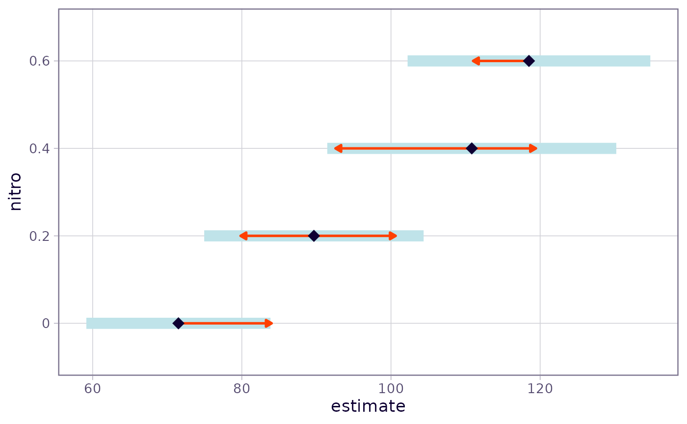

This allows the user to incorporate results obtained by some analysis
into an emmGrid object, enabling the use of emmGrid methods
to perform related follow-up analyses.
Arguments
- bhat
Numeric. Vector of regression coefficients
- V
Square matrix. Covariance matrix of
bhat- levels
Named list or vector. Levels of factor(s) that define the estimates defined by
linfct. If not a list, we assume one factor named"level"- linfct
Matrix. Linear functions of
bhatfor each combination oflevels.- df
Numeric value or function with arguments
(x, dfargs). If a number, that is used for the degrees of freedom. If a function, it should return the degrees of freedom forsum(x*bhat), with any additional parameters indfargs.- dffun
Overrides
dfif specified. This is a convenience to match the slot names of the returned object.- dfargs
List containing arguments for
df. This is ignored if df is numeric.- post.beta
Matrix whose columns comprise a sample from the posterior distribution of the regression coefficients (so that typically, the column averages will be
bhat). A 1 x 1 matrix ofNAindicates that such a sample is unavailable.- nesting
Nesting specification as in
ref_grid. This is ignored ifmodel.infois supplied.- ...
Arguments passed to
update.emmGrid
Details
The arguments must be conformable. This includes that the length of
bhat, the number of columns of linfct, and the number of
columns of post.beta must all be equal. And that the product of
lengths in levels must be equal to the number of rows of
linfct. The grid slot of the returned object is generated
by expand.grid using levels as its arguments. So the
rows of linfct should be in corresponding order.
The functions qdrg and emmobj are close cousins, in that
they both produce emmGrid objects. When starting with summary
statistics for an existing grid, emmobj is more useful, while
qdrg is more useful when starting from an unsupported fitted model.
See also
qdrg, an alternative that is useful when starting
with a fitted model not supported in emmeans.
Examples
# Given summary statistics for 4 cells in a 2 x 2 layout, obtain
# marginal means and comparisons thereof. Assume heteroscedasticity
# and use the Satterthwaite method
levels <- list(trt = c("A", "B"), dose = c("high", "low"))
ybar <- c(57.6, 43.2, 88.9, 69.8)
s <- c(12.1, 19.5, 22.8, 43.2)
n <- c(44, 11, 37, 24)
se2 = s^2 / n
Satt.df <- function(x, dfargs)
sum(x * dfargs$v)^2 / sum((x * dfargs$v)^2 / (dfargs$n - 1))
expt.rg <- emmobj(bhat = ybar, V = diag(se2),
levels = levels, linfct = diag(c(1, 1, 1, 1)),
df = Satt.df, dfargs = list(v = se2, n = n), estName = "mean")
plot(expt.rg)

( trt.emm <- emmeans(expt.rg, "trt") )
#> trt mean SE df lower.CL upper.CL
#> A 73.2 2.08 52.6 69.1 77.4
#> B 56.5 5.30 33.0 45.7 67.3
#>
#> Results are averaged over the levels of: dose
#> Confidence level used: 0.95
( dose.emm <- emmeans(expt.rg, "dose") )
#> dose mean SE df lower.CL upper.CL
#> high 50.4 3.08 12.0 43.7 57.1
#> low 79.3 4.79 31.4 69.6 89.1
#>
#> Results are averaged over the levels of: trt
#> Confidence level used: 0.95
rbind(pairs(trt.emm), pairs(dose.emm), adjust = "mvt")
#> contrast estimate SE df t.ratio p.value
#> A - B 16.8 5.69 23.23 2.941 0.0143
#> high - low -28.9 5.69 7.49 -5.084 0.0027
#>
#> Results are averaged over some or all of the levels of: dose, trt
#> P value adjustment: mvt method for 2 tests